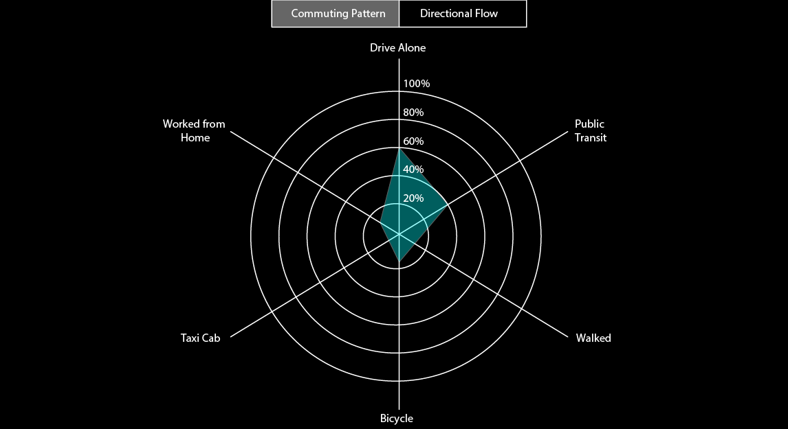
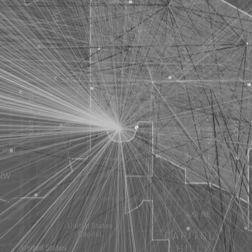

How do we define mobility?
Since the introduction of Capital Bikeshare in 2008, Washington, D.C. has undergone a revolution in mobility. By 2021, Bikeshare riders rode about 6.6 million miles across the system, with about 874,000 hours of riding, saving approximately 275,000 gallons of gasoline1. This encouraging trend is further informed by recent research that suggests auto users would drive less if a convenient "package" of micromobility services was available through a single provider2. Already, Transporation Network Companies (TNCs), such as Lyft, have responded to this finding by acquiring Capital Bikeshare as part of a future comprehensive mobility strategy. With our tool, our goal is to help TNCs analyze "mobility" through three different facets to better inform were naturally-occurring "mobility hubs" may be evident in DC.
Commuting Patterns
Commuting informs us how people on a daily basis choose to get to their destinations.
Sources
Geographies:
Open Data DC: Health Neighborhoods 2019 | Census Tracts 2010 | Street Segments 2005,
Capital BikeShare: Bike Stations 2021
Demographics:
US Census: 2019 ACS 5-yr Estimates
Trips:
Capital BikeShare: September 2021,
Open Data DC: Taxi Trips 2021
Auto-based vs. Active Transit
Spatial tells us where the naturally occurring origin and destination hubs are located in a given urban space.
Citations
1
Lazo, Luz. “Meet the Capital Bikeshare Rider Who Visited All 683 Stations.” The Washington Post, WP Company, 1 May 2022,
2
Moody, J., Farr, E., Papagelis, M. et al. The value of car ownership and use in the United States. Nat Sustain 4, 769–774 (2021). https://doi.org/10.1038/s41893-021-00731-5
Directional Flow

Flow shows us the intensity of connection between destinations, informing where demand is being generated through quantitative methods.
↓